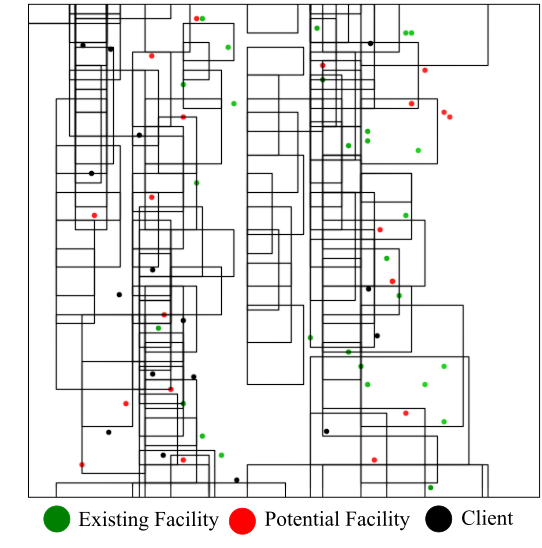

|
I am a Lecturer of Computer Science Department at East West University, Dhaka, Bangladesh. I completed my BSc in Computer Science and Engineering from Bangladesh Unviersity of Engineering and Techonology (BUET), where I was advised by Dr. Tanzima Hashem. I received the Regional Winner (Asia) award in Computer Science at The Global Undergraduate Awards, 2019 for my undergrad thesis. |

|
|
I'm interested in Interpretable AI, Spatio-Temporal Data Mining and Spatial Databases. |
|
Yeasir Rayhan, Tanzima Hashem Ongoing We aim to forecast (1-4 week ahead) the infection rate of infectious diseases such as COVID-19 at county-level of USA based on different spatio-temporal aspects such as inter-county human mobility, intra-county human mobility, different POIs, connectivity of counties, demographics along with traditional historical COVID-19 cases and deaths in an interpretable manner |
|
|  |
Tanzima Hashem, Yeasir Rayhan Ongoing In this paper, we study minmax location selection query and its variant, minmax facility replacement query in discrete space (e.g. indoor venues like hospitals, shopping centers). We adapt the state-of-the-art solution in road networks to indoor spaces and propose two baseline solutions for both queries. We propose two novel algorithms based on VIP-tree based nearest neighbor and shortest distance computation algorithms for both queries. Extensive Experiments on Melbourne Central and Chadstone Shopping Center dataset suggests the superiority of VIP tree based solution over the baseline solution for facility selection problem. However, baseline solution outperforms the VIP tree based solution for facility relocation problem |
|
Yeasir Rayhan, Tanzima Hashem Under Review Accuracy and interpretability are two essential properties for a crime prediction model. Because of the adverse affects that the crimes can have on human life, economy and safety, we need a model that can predict future occurrence of crime as accurately as possible so that early steps can be taken to avoid the crime. On the other hand, an interpretable model reveals the reason behind a model's prediction, ensures its transparency and allows us to plan the crime prevention steps accordingly. The key challenge in developing the model is to capture the non-linear spatial dependency and temporal patterns of a specific crime type while keeping the underlying structure of the model interpretable. In this paper, we develop AIST, an Attention-based Interpretable Spatio Temporal Network for crime prediction. AIST models the dynamic spatio-temporal correlations for a crime type based on past crime occurrences, external features (e.g., traffic flow and point of interest (POI) information) and recurring trends of crime. Extensive experiments show the superiority of our model in terms of both accuracy and interpretability using real datasets. |
|

|
Yeasir Rayhan, Tanzima Hashem, Roksana Jahan, Muhammad Aamir Cheema TSAS, 2019 In this article, we introduce generalized group trip scheduling (GGTS) queries that enable friends and families to perform activities at different points of interest (POIs), such as a shopping center, a restaurant and a pharmacy with the minimum total travel distance. Trip planning and scheduling for groups, an important class of location-based services (LBSs), have recently received attention from researchers. However, both group trip planning (GTP) and group trip scheduling (GTS) queries have restrictions: a GTP query assumes that all group members visit all required POIs together, whereas a GTS query requires that each POI is visited by a single group member. A GGTS query is more general and allows any number of group members to visit a POI together. We propose an efficient algorithm to evaluate the exact answers for GGTS queries in road networks. Since finding the answer for a GGTS query is an NP-hard problem, to reduce the processing overhead for a large group size or a large number of required POI types or a large POI dataset, we propose two heuris tic solutions—trip-scheduling heuristic (TSH) and search region refinement heuristic (SRH)—for processing GGTS queries. Extensive experiments with real datasets show that our optimal algorithm is preferable for small parameter settings, and the heuristic solutions reduce the processing overhead significantly in return for sacrificing the accuracy slightly. |
|
|
|
CSE110
Object-oriented Programming Language CURRENT |
CSE106
Discrete Mathematics CURRENT |
CSE103
Structured Programming Language Last: Summer20 |
|
CSE225
Numerical Methods Last: Fall19 |
||
|
Last Updated on Oct 2020. Thanks Jon Barron for this amazing template. |